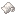

Ткацтво
Ткацтво
Ткацтво - це процес поєднання різних видів ниток у тканину. Останній етап ткацтва виконується на ткацькому верстаті, але деякі тканини, такі як вовна, отримані від вовняних тварин, потребують веретено для отримання вовняної пряжі.

Невипалена головка веретена формується з глини. Потім її треба випалити, щоб отримати головку веретена. Для завершення треба додати до неї паличку.


З'єднай вовну з веретеном для отримання пряжі.


Для виготовлення ткацького верстата потрібні дошки та паличка.

16


Рецепт вовняної тканини вимагає 16 одиниць вовняної пряжі. Для додавання пряжі до верстату використовуй ПКМ. Потім утримуй ПКМ, щоб розпочати роботу на ткацькому верстаті. По закінчені його роботи знов натисни ПКМ, для отримання тканини.


Фрагменти роботи ткацького верстата
4
8

Wool Cloth can be re-woven into Wool Blocks. Wool blocks can be dyed.
24


Шовкову тканину можна отримати з павутинок. У деяких випадках його можна використовувати як замінник вовни.
12


Мішковина не має застосування, але її можна виготовити з джутового волокна.


Weaving can be automated using Mechanical Power with the use of a Power Loom.
The Power Loom, like the regular Loom, can take input from hoppers on the side and extraction from hoppers on the bottom. On the right side of the loom, it can take power input from an Axle. Fill the loom as normal, and it will slowly weave together the final product for you. Power looms cannot be operated manually.